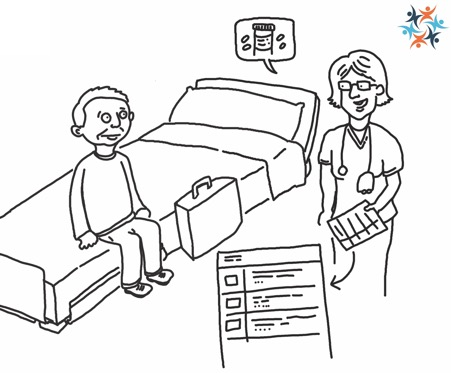

INTEROPen
INTEROPenUser stories to search for a Care Connect FHIR® Profile.
Important: This page has been added to promote discussion in INTEROPen of the use cases and scenarios. This project is being developed using an agile methodology so iterative updates to content will be added on a regular basis.
Introduction
Michael’s story has been widely developed, clinical assured and demonstrated at the INTEROPen summit. The following Epics, Scenario’s and User Stories attempt to describe how Care Connect FHIR resources can be used to support Michael’s story. The images have been taken from the Interop Summit.
Hospital discharge/encounter
Scenario:
‘Michael is to be discharged from hospital, with a care plan, and Dr. Hospital prepares his discharge summary. Dr. Hospital reconciles and reviews Michael’s discharge medications and produces a reconciled list of discharge medications. This includes hospital managed medication, new medications commenced during the hospital admission, Michael’s own over-the-counter medication, ongoing medication from the GP or other sectors.’
‘Michael is to be discharged from hospital, with a care plan, and Dr. Hospital prepares his discharge summary. Dr. Hospital reconciles and reviews Michael’s discharge medications and produces a reconciled list of discharge medications. This includes hospital managed medication, new medications commenced during the hospital admission, Michael’s own over-the-counter medication, ongoing medication from the GP or other sectors.’

Further Conversations:
This example refers to the reconciliation being performed by the doctor. The stories reflect this scenario and don’t explore the other cases where the reconciliation is performed by a technician or a pharmacist. This could be significant given that reconciliation by a technician when not validated by a pharmacist would include additional workflow for review.
This example refers to the reconciliation being performed by the doctor. The stories reflect this scenario and don’t explore the other cases where the reconciliation is performed by a technician or a pharmacist. This could be significant given that reconciliation by a technician when not validated by a pharmacist would include additional workflow for review.
EPIC: Reconcile the patient’s drug chart for discharge
| User Story | Profile |
|---|---|
| As a clinician (hospital services) I want to ‘stop’ medication that is present on the patient’s drug chart because a drug is no longer being taken by the patient or I do not consider it necessary to ‘take out’. | POST MedicationRequest |
| As a clinician (hospital services) I want to add additional drugs that the patient may be taking to their drug chart because the patient declares that they are taking a drug that is not currently listed. | POST MedicationRequest |
| As a clinician (hospital services) I want to continue medication that may have been put on hold during medicines reconciliation stage 1 on admission because the reasons that the drug were put on hold during the patient’s admission are no longer relevant and the patient requires the medication for their ongoing condition. | POST MedicationRequest |
| As a clinician (hospital services) I may wish to add additional information in the form of a note or comment against each medication change that I make so when I am unable to resolve unintentional discrepancies there will be a notification to the the GP that some further consideration may be required. | POST MedicationRequest |
| As hospital services I want to send the complete list of patient medication to the patient’s GP so that the GP can compare the information with their own records and amend accordingly. | POST MedicationStatement |
EPIC: Create a discharge summary
| User Story | Profile |
|---|---|
| As a clinician (hospital Services) I want to include the patient’s TTO medications in the discharge summary to provide a complete and accurate list of the patient’s medication to the GP. | GET MedicationStatement |
Dispensing / Repeat prescriptions
Scenario:
The hospital pharmacist reviews this medication list and after clarifying with Michael which ones he already has, dispenses the appropriate medications. The hospital pharmacist counsels Michael on his new medications and prepares a patient-friendly medication schedule to help Michael understand what, why, when and how to take his medications.
The hospital pharmacist reviews this medication list and after clarifying with Michael which ones he already has, dispenses the appropriate medications. The hospital pharmacist counsels Michael on his new medications and prepares a patient-friendly medication schedule to help Michael understand what, why, when and how to take his medications.
EPIC: Dispensing of TTO medication
| User Story | Profile |
|---|---|
| As a pharmacist (hospital services) I want to validate the medications prescribed, with the patient, so that i can provide the patient with the necessary medication that supplements what they currently have, ensuring they have enough medication to last at least two weeks (or a locally agreed amount). | GET MedicationStatement |
| As a pharmacist (hospital services) I want to know if the patient requires a compliance aid to ensure that the medication is correctly packaged for the patient’s needs. | GET MedicationStatement |
| As a pharmacist (hospital services) I want to dispense at least a two weeks supply of medication (or locally agreed amount) to the patient based on their final list of medication at discharge to provide the patient with the correct medication as prescribed until their GP has had enough time to reconcile the patient’s TTO meds with their own record and the patient has had sufficient chance to arrange a follow-up appointment if necessary. | POST MedicationDispense |
| As a pharmacist (hospital services) I want to counsel the patient to help them understand what, why, when and how to take their medications. | POST Encounter |
| As a pharmacist (hospital services) I want to prepare a “patient friendly” medication schedule to help the patient understand what, why and how to use their medication. | GET MedicationStatement |